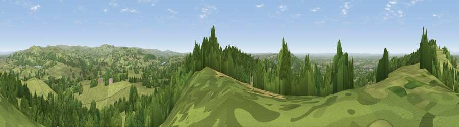

Viewpoint near Timbersbrook
#11118 in England · top 13% of its area beats it · near TimbersbrookWhere it is
The exact computed spot (SJ 90825 62625). Click the marker for map links.
The view, rendered

A 360° render of this exact spot computed from the terrain model, tree cover and land cover — summer colours, afternoon light, calibrated against photographs of famous viewpoints. Real trees, hedges and buildings will differ in detail.
The panorama
Grey silhouette: terrain skyline in each direction (720 bearings, Earth curvature and refraction included). Dashed green: skyline with trees (+15 m) and buildings (+8 m) as obstacles. Blue strip: how far the ground is visible on each bearing.
Where the view opens
Wedge length = distance to the farthest visible ground on that bearing (vegetation-aware). Rings at 10, 25 and 50 km.
What fills the view
61% grassland · 33% woodland · 3% cropland · 3% built-up
Angular shares of the visible panorama (visual magnitude), not map area. Landscape diversity 0.38 (0–1 Shannon).
Key numbers
More beautiful places nearby
The staircase of upgrades: each row has a higher view potential than everything closer. Driving times are estimates from straight-line distance, calibrated against real road routing — check an actual route before setting out.
| Place | Direction | Drive | Score |
|---|---|---|---|
| Viewpoint near Timbersbrook | NW · 1 km | ~3 min | 69.1 |
| Viewpoint near Timbersbrook | NNW · 1 km | ~3 min | 74.4 |
| Viewpoint near Mow Cop | SW · 7 km | ~14 min | 78.9 |
| Viewpoint near Mow Cop | SW · 7 km | ~15 min | 80.2 |
| Viewpoint near Harthill | W · 40 km | ~60 min | 80.5 |
| White Brow | NNW · 55 km | ~77 min | 82.9 |
| Viewpoint near Little Wenlock | SSW · 61 km | ~83 min | 84.2 |
| The Wrekin | SSW · 61 km | ~84 min | 85.0 |
53.16067, -2.13868 · source: screening · position refined by local search. Computed location — check access rights before visiting.